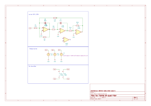
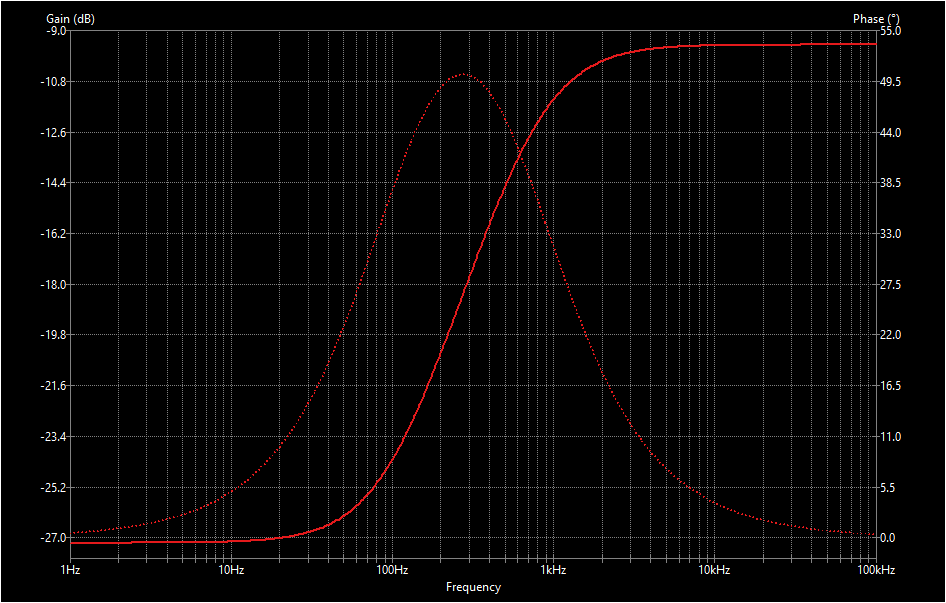
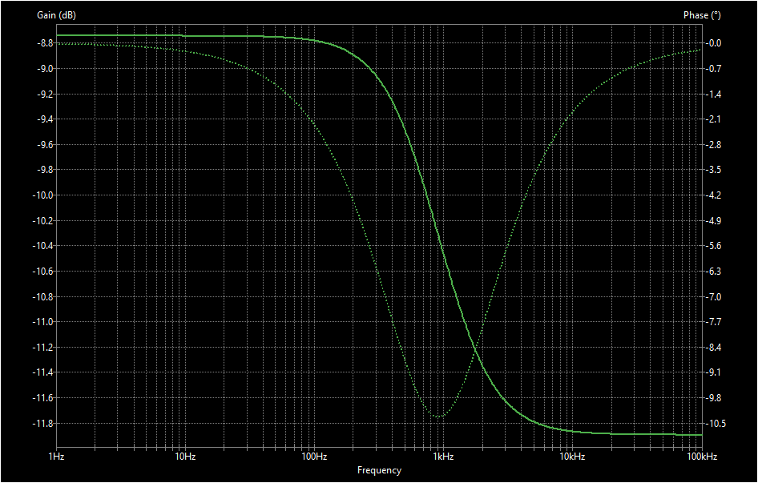

Designing a bandpass filter using tow-thomas circuit
Given
\(f_0\) = 1000 Hz and \(Q\) = 10
Unknowns
\(R\), \(R_1\), \(R_2\), \(R_3\), \(C\)
Analysis
from Eq.1 we get, \(B.W\) = \(\frac{f_0}{Q}\)= \(\frac{1000}{10}\)=100Hz
we substitute \(\omega_0\) = \(2\pi f_0\)
from the above equations we calculate all values and store the available capacitor values in clist of the below python code. Note that the capacitance value is in \(\mu F\)
\(R_3\) is choosen arbitarily so as to not load down the second or the third op-amp
import numpy as npdef bandPassFilterTowThomas(f_0,Q,A_mid,clist):for c in clist:print("For C: ",c) c=c*10**-6#in microFarard w_0 =2*np.pi*f_0#Q=10 #quality factor#A_mid = 20 #midband gain k =10**-3 R =1/(w_0*c)print("\t R : "+str(np.ceil(R)*k)+" K ohm") R_2 = Q*Rprint("\t R_2 : "+str(np.ceil(R_2)*k)+" K ohm") R_1 = R*Q/A_midprint("\t R_1 : "+str(np.ceil(R_1)*k)+" k ohm")clist=[0.01,0.1,0.2,1,0.0027]bandPassFilterTowThomas(1000,10,10,clist)
For C: 0.01
R : 15.916 K ohm
R_2 : 159.155 K ohm
R_1 : 15.916 k ohm
For C: 0.1
R : 1.592 K ohm
R_2 : 15.916 K ohm
R_1 : 1.592 k ohm
For C: 0.2
R : 0.796 K ohm
R_2 : 7.958 K ohm
R_1 : 0.796 k ohm
For C: 1
R : 0.16 K ohm
R_2 : 1.592 K ohm
R_1 : 0.16 k ohm
For C: 0.0027
R : 58.947 K ohm
R_2 : 589.463 K ohm
R_1 : 58.947 k ohm
Choice
We choose \(C\) = 0.1\(\mu F\) so as to have the resistance on a reasonable level and we choose \(R_1\) to be on same as that of \(R\)
Simulation
We simulate the same using Ki-Cad 
The graph of the simulated data is as follows   ### (NEW APPROACH) Designing a bandpass filter using tow-thomas circuit
import numpy as np# fixingf_p =1000#HzQ =10a_0= (2*np.pi*f_p)**2a_1=2*np.pi*f_p/Qdef tf(name,num_s_0,num_s_1,num_s_2,den_s_0,den_s_1,den_s_2): num_s_0 = np.round(num_s_0,2) num_s_1 = np.round(num_s_1,2) num_s_2 = np.round(num_s_2,2) den_s_0 = np.round(den_s_0,2) den_s_1 = np.round(den_s_1,2) den_s_2 = np.round(den_s_2,2)print(name)print("("+str(num_s_2)+"s^2)"+"+"+"("+str(num_s_1)+"s)"+"+"+"("+str(num_s_0)+")")print("---------------------") print("("+str(den_s_2)+"s^2)"+"+"+"("+str(den_s_1)+"s)"+"+"+"("+str(den_s_0)+")")def v01byvin(k_2,b_2,a_1,b_1,a_0): num_s_0 =-k_2*((b_2*a_0)-b_0) num_s_1 =-k_2*((b_2*a_1)-b_1) num_s_2 =0 den_s_0 = a_0 den_s_1 = a_1 den_s_2 =1 tf("\nV_01/V_in:",num_s_0,num_s_1,num_s_2,den_s_0,den_s_1,den_s_2)def v02byvin(b_2,b_1,b_0,a_0,a_1): num_s_0 = b_0 num_s_1 = b_1 num_s_2 = b_2 den_s_0 = a_0 den_s_1 = a_1 den_s_2 =1 tf("\nV_02/V_in:",num_s_0,num_s_1,num_s_2,den_s_0,den_s_1,den_s_2)def v03byvin(b_2,b_1,b_0,a_0,a_1,k_1): num_s_0 = (-1/(k_1*np.sqrt(a_0)))*((a_1*b_0)-(a_0*b_1)) num_s_1 = (-1/(k_1*np.sqrt(a_0)))*(b_0-(b_2*a_0)) num_s_2 = b_2 den_s_0 = a_0 den_s_1 = a_1 den_s_2 =1 tf("\nV_03/V_in:",num_s_0,num_s_1,num_s_2,den_s_0,den_s_1,den_s_2)def design(name,R_8,C_1,C_2,k_1,k_2,b_0,b_1,b_2): print(name) R_1 =1/(a_1*C_1) R_2 = k_1/(np.sqrt(a_0)*C_2) R_3 =1/(k_1*k_2*np.sqrt(a_0)*C_1) R_4 = (1/k_2)*(1/((a_1*b_2)-b_1))*(1/C_1) R_5 = k_1*np.sqrt(a_0)/(b_0*C_2) R_7 = k_2*R_8 R_6 = R_8/b_2 R_tuples = R_1,R_2,R_3,R_4,R_5,R_6,R_7,R_8for i inrange(0,8,1):print("R "+str(i+1)+" = "+str(R_tuples[i])) v01byvin(k_2,b_2,a_1,b_1,a_0) v02byvin(b_2,b_1,b_0,a_0,a_1) v03byvin(b_2,b_1,b_0,a_0,a_1,k_1)#settingR_8 =1#kC_1 =0.1#uFC_2 =1#uF#assumptionk_1 =1#ratio is set to 1 for initk_2 =1#ratio is set to 1 for initb_2 =1#ratio is set to 1 for initb_0 =1#is set to 1 for initb_1 =1#is set to 1 for initdef finaldesign(R_8,C_1,C_2,k_1,k_2,b_0,b_1,b_2): design("when b1=0",R_8,C_1,C_2,k_1,k_2,b_0,b_1,b_2) finaldesign(R_8,C_1,C_2,k_1,k_2,b_0,b_1,b_2)
when b1=0
R 1 = 0.015915494309189537
R 2 = 0.00015915494309189535
R 3 = 0.0015915494309189533
R 4 = 0.015940864983782832
R 5 = 6283.185307179586
R 6 = 1.0
R 7 = 1
R 8 = 1
V_01/V_in:
(0s^2)+(-627.32s)+(-39478416.6)
---------------------
(1s^2)+(628.32s)+(39478417.6)
V_02/V_in:
(1s^2)+(1s)+(1)
---------------------
(1s^2)+(628.32s)+(39478417.6)
V_03/V_in:
(1s^2)+(6283.19s)+(6283.09)
---------------------
(1s^2)+(628.32s)+(39478417.6)
KHN Biquad
import numpy as npc =0.1*10**-6#Ff_c =1000#HzQ=10R =1/(2*np.pi*c*f_c) #ohmR_3 = R_4 =2000#ohmR_1 = [1000]for r_1 in R_1: r_2 = (r_1*(R_3+R_4)/(Q*R_4))-r_1print(r_2)